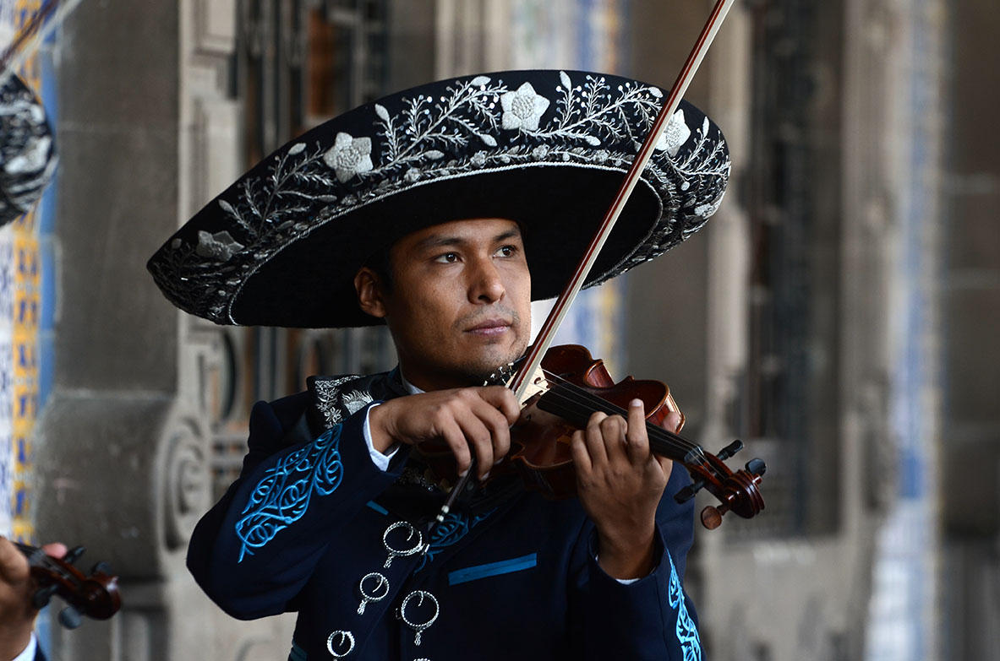
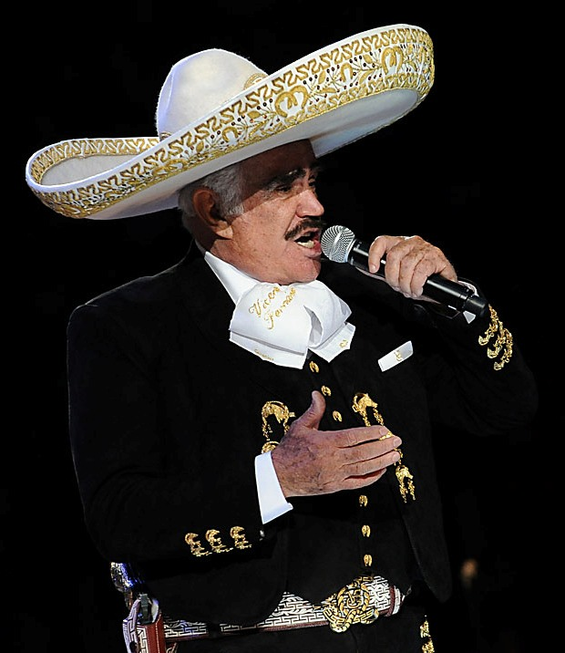
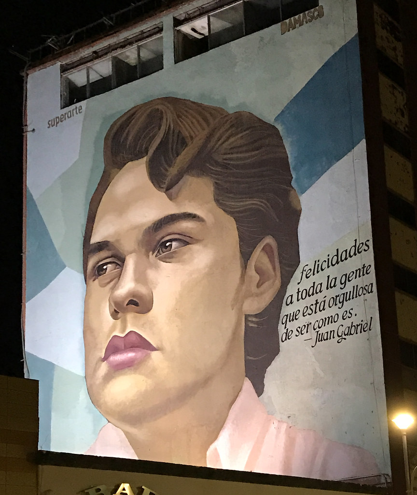
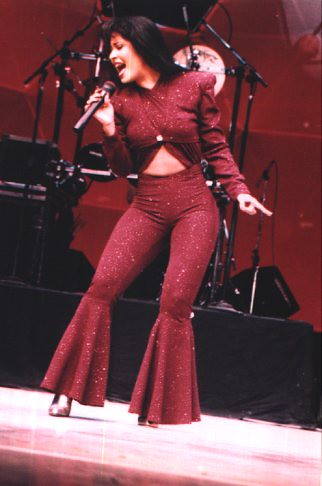

Musica en la vida cotidiana de los mexicanos
Music has a powerful influence on the daily lives of Mexicans, from the streets to the supermarkets, from businesses and shopping centers to weddings, and even at funerals or religious services. It forms an integral part of the identity, emotional expression, and cultural tradition shaping the life of every Mexican.
There are numerous musical genres that are widely listened to throughout the country, as well as major musical figures who have achieved a global impact. These artists are regarded as pop culture icons and national legends who, to this day, continue to honor their legacy through their music.
Musical genres commonly listened to in Mexico
- Mariachi
- Ranchera
- Banda
- Norteño
- Corridos
- Cumbia
- Spanish Pop
- Spanish Rock
- Reggaeton
- Latin Trap
- Salsa
- Duranguense
- Traditional Indigenous Music
- Bolero
- Etc.
Mariachi
Mariachi is traditional form of Mexican music originating from the state of Jalisco. Performers typically wear traditional attire consisting of an elegant suit, commonly black and adorned with ornamentation, and a large, highly distinctive hat that leaves a lasting impression.
Info source: Source

Image source: source
{kind=link}
Here is an example of an authentic Mexican mariachi performance. The title of this song is "Sabes una Cosa" and this version is known in all over the Country.
Video source: Source
Vicente Fernandez
Vicente Fernández is one of Mexico's most famous iconic singers; he is renowned as the King of Ranchera music. Possessing a powerful vocal range, her interpretations of traditional Mexican songs have transcended international barriers.

Image source: source
{kind=link}
Luis Miguel
Luis Miguel, also known as "El Sol de México," is one of the most famous Mexican singers not only in Mexico, but throughout the entire world.
Luis Miguel, also known as "El Sol de México," is one of the most famous Mexican singers not only in Mexico, but throughout the entire world.
Image source: source
{kind=link}
Juan Gabriel
When speaking about Mexican music, let's not forget to mention Juan Gabriel. Juan Gabriel is one of the most important and influential singers and songwriters in Mexico.
His history, his charisma, and the manner in which he rose to fame are so enigmatic that they have transformed him into a legend of pop culture.

Image source: source
Selena Quintanilla
Finally, I would also like to mention Selena Quintanilla”the Queen of Tex-Mex”who, from a young age, was distinguished by her vocal talent and her ability to compose music.
Her music is so iconic that, to this very day, not only in Mexico but also in the United States and anywhere else in the world, it can still be heard in nightclubs and at dances.
It is so sad to see how her life was taken at such a young age; but even though her life was snatched away, yet her legacy lives on.

Image source: source